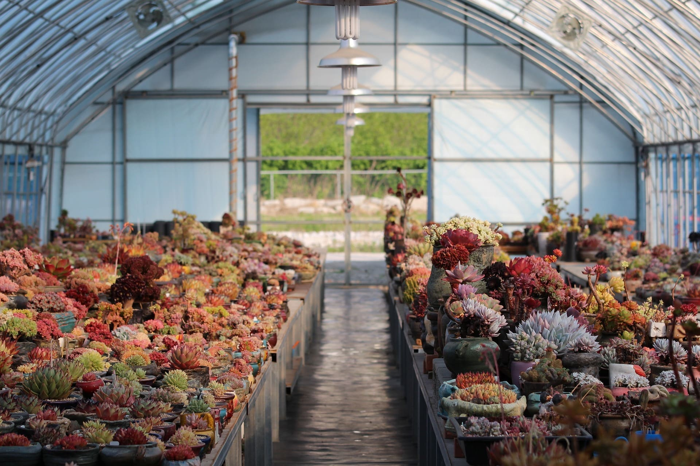

植物照顧

第一次種植盆栽？這邊整合在種植上需要注意的事情，給各位Lv.1直接升級到Lv.50，不會種沒多久植物就跟你說下一世再見，趕快往下看看吧！
陽光/Shine
1. 全日照：指每天 6 小時以上的直射陽光。若是住在城市裡，無遮蔽物的「南面陽台」大多會屬於全日照的環境。如多肉植物、蔬果花卉都是需要全日照的植物。
2. 半日照：同樣是直射陽光，但只有全日照的一半強度。陽台的東面與西面經常會是「半日照」環境，或是在全日照環境使用遮陽網也行。大部分的觀葉植物都適合半日照環境。
3. 散射光：也就是非陽光直曬處（間接光線），有陽光的窗邊與室內、面北的陽台就屬於散射光環境。若你能在不開燈的狀態下清楚閱讀報紙，那該處就是所謂的「明亮散射光」。如萬年青、龜背芋、蔓綠絨就比較喜歡明亮的散射光。
2. 半日照：同樣是直射陽光，但只有全日照的一半強度。陽台的東面與西面經常會是「半日照」環境，或是在全日照環境使用遮陽網也行。大部分的觀葉植物都適合半日照環境。
3. 散射光：也就是非陽光直曬處（間接光線），有陽光的窗邊與室內、面北的陽台就屬於散射光環境。若你能在不開燈的狀態下清楚閱讀報紙，那該處就是所謂的「明亮散射光」。如萬年青、龜背芋、蔓綠絨就比較喜歡明亮的散射光。
澆水/Watering
不同植物對水分有不同的需求。有些人可能會告訴你每周澆一次或每天早上澆一次，事實上這並不準確，因為氣候等外部因素很容易影響植物水分的吸收情況。有時候水乾得快，有時候乾得慢，補不夠或補太多都會害死它（經常是澆太多）。
因此「土乾了再澆水」是對於大多數植物來說較好的做法，要怎麼確認土是不是乾了？只要將手指插入土壤下方兩個指節，感覺土壤一下濕度即可，還濕潤就再等等，乾了就代表該補水囉。
因此「土乾了再澆水」是對於大多數植物來說較好的做法，要怎麼確認土是不是乾了？只要將手指插入土壤下方兩個指節，感覺土壤一下濕度即可，還濕潤就再等等，乾了就代表該補水囉。
肥料/Fertilizer
肥料大致上分為三類，即溶肥料、緩釋長效肥、有機質肥料、營養劑，三者大多都會內涵不等量的肥料三元素：氮、磷、鉀，在外包裝上常常有數字顯示 20-20-20，就是代表氮磷鉀的成份比例，而三者對應植物的機制，大致上是葉、根、莖，而實際上都是環環相扣的唷。
室內植物不推薦使用「有機肥」，比較容易易散發異味、吸引蚊蟲。要注意，過度的施肥稱為「肥害」，會使植物無法吸收水分而枯死；或是造成植物虛弱，會更容易受到病蟲的侵害。
室內植物不推薦使用「有機肥」，比較容易易散發異味、吸引蚊蟲。要注意，過度的施肥稱為「肥害」，會使植物無法吸收水分而枯死；或是造成植物虛弱，會更容易受到病蟲的侵害。
盆器/Pot
多數植物都喜歡透氣性佳的土壤，因為根部除了吸水之外也需要「呼吸空氣」，不同的介質也有不同的營養成分與特質。
若在介質表面還是濕潤的狀態下澆水，根部的水分會過於飽和，導致淹水，如此一來，植物根部便無法呼吸，呈現窒息狀態！此外，若一直保有水份，植物無法長出新根，根群也無法茁壯地生長。脆弱的根部即使能在一直保有水分的狀態下生長無礙，不過一旦處於長期乾燥下，受損的程度就會十分嚴重，甚至會出現完全枯萎、乾死等情形。
根部也能獲得所需的氧氣，澆水後，待盆內的水順暢排出，進行空氣交換的工作，確認土壤乾燥後，即可進行下一次的澆水工作。
盆器挑選上則可以參考兩個原則：
1.有洞的盆器 – 提升土壤介質的排水能力，讓根系呼吸。
2.能排水的材質 – 水泥盆、陶盆、瓦盆等材質都能有效協助盆中的土壤排出水分。
1.有洞的盆器 – 提升土壤介質的排水能力，讓根系呼吸。
2.能排水的材質 – 水泥盆、陶盆、瓦盆等材質都能有效協助盆中的土壤排出水分。
蟲蟲危機/Bug
常見的害蟲包括蚜蟲、螞蟻、蚊蟲、蜘蛛蟎和粉虱。
雖然蚜蟲、螞蟻和蒼蠅是可見的，但蟎是很難發現的。蟎侵染的跡象包括葉和莖上微小的淺綠色斑點，捲曲或枯葉。
請選擇可信賴的實體或網路園藝店，否則買到生病的植物，帶回家一定很快就死了。
實體店購買的話最能檢查植物健康狀況──葉子是一個指標，健康的植物葉片茂盛，葉色鮮綠有光澤；也請細心檢查植物有無蜘蛛網或小昆蟲在爬，葉面、葉背、葉莖上是否有白斑或黑斑，或被蟲咬過的痕跡，或任何其他破損。這都可能是盆栽已經生病或被害蟲入侵。
實體店購買的話最能檢查植物健康狀況──葉子是一個指標，健康的植物葉片茂盛，葉色鮮綠有光澤；也請細心檢查植物有無蜘蛛網或小昆蟲在爬，葉面、葉背、葉莖上是否有白斑或黑斑，或被蟲咬過的痕跡，或任何其他破損。這都可能是盆栽已經生病或被害蟲入侵。
修剪枝葉/Prune
用乾淨的剪刀剪去枯萎的花朵和葉子。修剪他們在一個45度的角度，正好低於棕色或死區。以45度角夾緊新的生長1.3厘米以上的結節，以保持快速生長的植物受到控制。結節看起來像一個小腫塊或芽，在那裡出現新的生長。
如果你正在剪草本植物或修剪一個快速的種植者，避免一次移除超過30%的植物。剪得太多會震動並殺死植物。修剪會鼓勵新的生長，並使你的植物更充分，更健壯的成長。
如果你正在剪草本植物或修剪一個快速的種植者，避免一次移除超過30%的植物。剪得太多會震動並殺死植物。修剪會鼓勵新的生長，並使你的植物更充分，更健壯的成長。